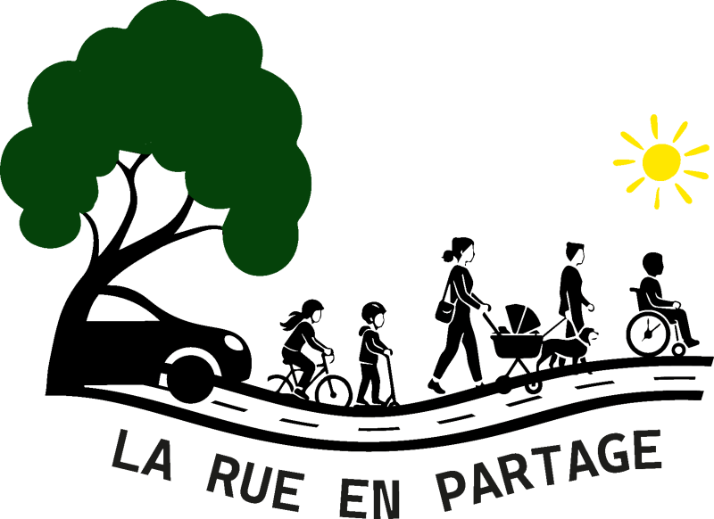

La rue en partageEt si je changeais ma façon de me déplacer ?
Renseignez votre situation, choisissez ce qui vous semble possible, et découvrez l’effet sur le CO₂ et sur votre budget.
A – Ma situation
B – Ce que je pourrais changer
Ce que ça change pour moi
Combien de temps à vélo ?
Trajet simple de km. Vitesse moyenne : 5 km/h à pied, 17 km/h en vélo musculaire, 20 km/h en vélo électrique.
Et pour ma santé ?
Références
- OMS, Lignes directrices sur l’activité physique et la sédentarité (2020) : 150 à 300 minutes d’activité d’endurance d’intensité modérée par semaine pour les adultes ; les déplacements à vélo ou à pied comptent.
- Vélo électrique : étude suivant environ 1 800 cyclistes allemands (temps de pédalage plus court qu’à vélo musculaire, mais mobilité active facilitée, notamment pour les personnes âgées) et étude néerlandaise sur l’effort selon le mode d’assistance. Ces deux liens sont des articles de presse qui relaient les études ; consultez les publications d’origine avant de les citer.
Information générale, non médicale : en cas de problème de santé, demandez conseil à un médecin.
Hypothèses de calcul
150 g de CO₂/km. Consommation : 6.5l/100km à 80km/h elle augmente progressivement dans les bouchons, jusqu'à 14L/100km (en dessous de 5 km/h). Carburant : 2,2 €/L. Voiture : amortissement 1 000 €/an, assurance 600 €/an, entretien et usure 500 €/an (2 100 €/an). 45 semaines travaillées par an. Petits trajets du quotidien : 3 allers-retours par semaine, 2 km l’aller simple, 50 semaines, vitesse en ville 20 km/h. Vélo classique jusqu’à 8 km aller simple, vélo électrique jusqu’à 20 km. Deux-roues motorisé : 6 L/100 km et 124 g de CO₂/km ; pas d’option d’abandon de véhicule pour le deux-roues. Vitesses moyennes à vélo, arrêts et feux compris : 17 km/h en vélo musculaire, 20 km/h en vélo électrique. Marche : 5 km/h. Le coût d’achat et d’entretien du vélo n’est pas déduit.
Retraités : la question des trajets porte sur vos déplacements quotidiens ; la distance, la fréquence par semaine et la durée vous sont demandées pour affiner l’analyse. Transports en commun : 28 g de CO₂/km ; abonnement mensuel de 21,40 € avant 28 ans, 45,80 € de 28 à 59 ans et 33 € à partir de 60 ans (compté 12 mois par an) ; l’économie d’un passage aux transports en commun est calculée nette du coût de l’abonnement. Petits trajets du quotidien (pain, journal…) : forfait de 3 allers-retours par semaine à 2 km l’aller simple (50 semaines, vitesse en ville 20 km/h), ajouté au bilan uniquement s’il y a une voiture au foyer ; cocher « petites courses à vélo » retire ce forfait du bilan. Marche : 5 km/h, sans CO₂ ni carburant.
Qu’est-ce qui me freinerait ?
Vos réponses sont enregistrées automatiquement de façon anonyme (aucun nom, aucun texte libre, aucune adresse IP conservée) pour mieux comprendre les freins à la mobilité à vélo. Cochez la case pour ne rien enregistrer.